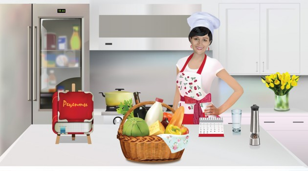
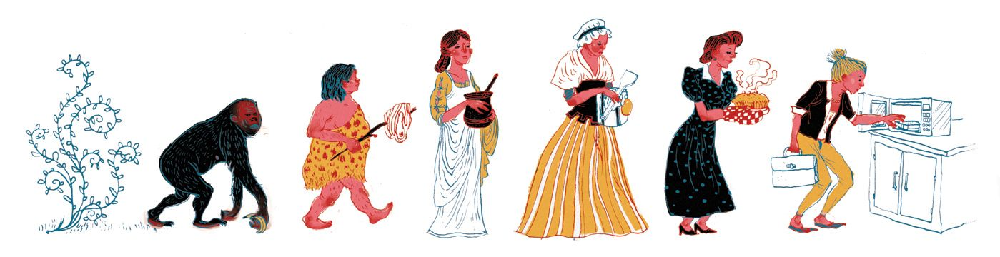
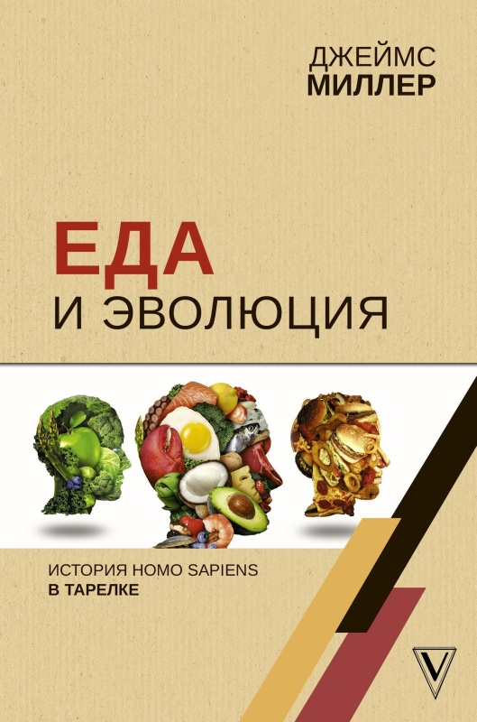
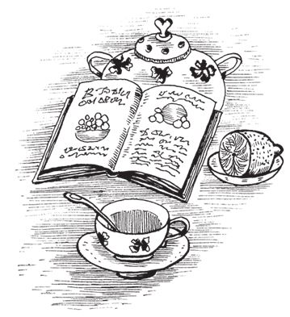
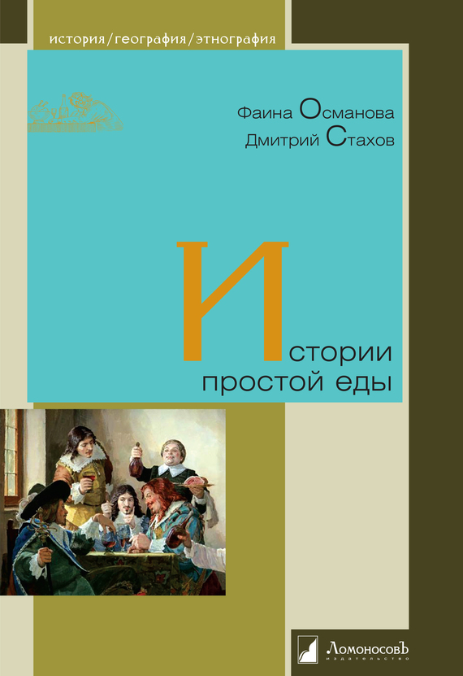

Этот сайт посвящен истории еды, кулинарии и основных продуктов питания, которые использует человек.
Еда в жизни человека играет важнейшую роль и чтобы жить, человек должен питаться. Желательно питаться вкусно и качественно.
Существеннейшей связью животного организма с окружающей природой является связь через известные химические вещества, которые должны постоянно поступать в состав данного организма, то есть связь через еду - писал академик Иван Петрович Павлов.
К еде следует также отнести воду и другие напитки, которые мы употребляем. Вода служит материалом для построения клеток и тканей; без нее в организме не могут протекать никакие химические процессы.
Наша еда состоит из пищевых веществ. К их числу относятся белки, жиры и углеводы. Вещества эти примечательны тем, что все они содержат в себе один из наиболее распространенных на земле элементов - углерод.
В состав еды входят также минеральные соли и витамины. Однако недостаточно того, чтобы еда удовлетворяла жизненные потребности организма. еда должна оказывать адекватное влияние на вкусовые рецепторы, то есть быть вкусной и отвечать установившимся представлениям о внешнем виде, вкусе, запахе, присущим тому или иному продукту.
Вот и попытался я на этом сайте отобразить историю еды и основных ,наиболее употребляемых людьми , пищевых продуктов питания, а также их краткое описание и наиболее используемые кулинарные рецепты - учитесь, исследуйте , готовьте и кушайте на здоровье ...
Для особо любознательных. О Еде и Эволюции - здесь ...
Истории простой еды ...
P.S.
1. Этот Сайт задуман как информационно-справочный ресурс для любознательных гурманов а не для простых "любителей пожрать".
2. Относительно ознакомительных электронных версий книг , представленных здесь - то после прочтения (если Книга Вам полезна или просто понравилась) - рекомендую заказать ее бумажное издание. Согласитесь - обычную книгу намного удобнее читать - чем с экрана монитора.Да и зрение сохраните ...
3. Все Авторские данные - сохранены и этот сайт является фактически бесплатной рекламой для этих книг и материалов .
4. Большое внимание уделяется эротическому, лечебному и косметическому использованию продуктов питания.
Еда в жизни человека играет важнейшую роль и чтобы жить, человек должен питаться. Желательно питаться вкусно и качественно.
Существеннейшей связью животного организма с окружающей природой является связь через известные химические вещества, которые должны постоянно поступать в состав данного организма, то есть связь через еду - писал академик Иван Петрович Павлов.
К еде следует также отнести воду и другие напитки, которые мы употребляем. Вода служит материалом для построения клеток и тканей; без нее в организме не могут протекать никакие химические процессы.
Наша еда состоит из пищевых веществ. К их числу относятся белки, жиры и углеводы. Вещества эти примечательны тем, что все они содержат в себе один из наиболее распространенных на земле элементов - углерод.
В состав еды входят также минеральные соли и витамины. Однако недостаточно того, чтобы еда удовлетворяла жизненные потребности организма. еда должна оказывать адекватное влияние на вкусовые рецепторы, то есть быть вкусной и отвечать установившимся представлениям о внешнем виде, вкусе, запахе, присущим тому или иному продукту.
Вот и попытался я на этом сайте отобразить историю еды и основных ,наиболее употребляемых людьми , пищевых продуктов питания, а также их краткое описание и наиболее используемые кулинарные рецепты - учитесь, исследуйте , готовьте и кушайте на здоровье ...
Для особо любознательных. О Еде и Эволюции - здесь ...
Истории простой еды ...
P.S.
1. Этот Сайт задуман как информационно-справочный ресурс для любознательных гурманов а не для простых "любителей пожрать".
2. Относительно ознакомительных электронных версий книг , представленных здесь - то после прочтения (если Книга Вам полезна или просто понравилась) - рекомендую заказать ее бумажное издание. Согласитесь - обычную книгу намного удобнее читать - чем с экрана монитора.Да и зрение сохраните ...
3. Все Авторские данные - сохранены и этот сайт является фактически бесплатной рекламой для этих книг и материалов .
4. Большое внимание уделяется эротическому, лечебному и косметическому использованию продуктов питания.
|
Желаю вам приятного и ,самое главное, полезного аппетита ...
Еду и продукты питания исследовал Валентин Иванович Приходько , Украина . 
Кстати ... Подробные обзоры
|
Облако тегов :
Почти все об истории еды, кулинарии и основных продуктов питания , еда , кулинария , продукты питания , белки, жиры, углеводы, витамины, минеральные вещества, вода, соль , хлеб, мясо, кулинарные и лечебные рецепты, эротическое питание, нитраты , ГМО , штрих-код.
Почти все об истории еды, кулинарии и основных продуктов питания , еда , кулинария , продукты питания , белки, жиры, углеводы, витамины, минеральные вещества, вода, соль , хлеб, мясо, кулинарные и лечебные рецепты, эротическое питание, нитраты , ГМО , штрих-код.
История хлеба.
Почти все о хлебе.
Печем хлеб дома.
Картофель.
Шашлык.
Плов.
Сыр.
Бобовые.
Водоросли.
Грибы.
Зелень.
Растительное масло.
Икра.
Крупы.
Рис.
Что такое мука.
О качестве муки.
Каши.
Блины.
Пельмени и вареники.
Макароны и спагетти.
Мед.
Молочные продукты.
Мясо.
Сало.
Заливные.
Пицца.
Паштеты.
Салат Оливье.
Птица.
Яйца.
Раки.
Немного о рыбе.
Морепродукты.
Соль.
Сахар.
Фрукты , Ягоды.
Цитрусовые.
Овощи.
Яблоки.
Орехи.
Шоколад.
Соусы красные.
Соусы белые.
Кратко о специях.
Кетчупы и аджики.
Белки.
Жиры и углеводы.
Витамины.
Минеральные вещества.
Вода.
Соль и организм.
Более подробно о роли витаминов и минералов.
Состав и калорийность некоторых продуктов питания.
Человек и еда. Влияние еды на организм человека. Влияние еды на характер человека. Влияние цвета и вкуса продуктов на организм человека. Правильное и лечебное питание. Рейтинг наиболее полезных продуктов питания. Рейтинг наиболее вредных продуктов питания.
О курении и курильщиках. Об алкоголе и алкоголиках. О лечении водкой и вином . О наркотиках и наркоманах.
Человек и еда. Влияние еды на организм человека. Влияние еды на характер человека. Влияние цвета и вкуса продуктов на организм человека. Правильное и лечебное питание. Рейтинг наиболее полезных продуктов питания. Рейтинг наиболее вредных продуктов питания.
О курении и курильщиках. Об алкоголе и алкоголиках. О лечении водкой и вином . О наркотиках и наркоманах.
Эротическое питание
Что это ?.
Первые блюда.
Вторые блюда.
Изделия из теста.
Напитки.
Закуски.
Десерт.
Заключение.
Разное ... Всякое ... Что полезно было бы знать ...
Полный каталог пищевых добавок (Е-добавок).
Нитраты.
ГМО.
Штрих-код.
Совместимость продуктов.
Микроволновка.
Его Величество Чеснок.
Все о крапиве.
Что такое имбирь.
О зеленом кофе.
Что такое хрен.
Пряности и специи.
Польза и вред знакомых продуктов .
Как сбросить вес .
Как бросить пить .
Лучшие тосты !!!

Библиотека начинающего повара , избранные кулинарные рецепты ...
Его величество Шашлык .
Шашлык единственная еда, которая не рассматривается нами как закуска.
Это явление нашей жизни, повод для людей пообщаться, выехать на природу ...
Читать дальше ...
Первые блюда
Вкусный горячий суп, прозрачный бульон с гарниром или ароматный борщ – очень популярные и любимые блюда, без которых не обходится ни один обед. Их подают в первую очередь ...
Читать дальше ...
Вторые блюда
Вторые блюда – это обеденные блюда, которые едят после супа или бульона, за праздничным столом ...
Читать дальше ...
Блюда в горшочках
Приготовление пищи в глиняных горшочках позволяет сохранить питательную ценность продуктов без потери их вкуса и аромата ...
Читать дальше ...
Салаты
Наверное, нет такого человека, который бы не любил салаты. Рецептов салатов существует огромное множество ...
Читать дальше ...
Блюда из мяса и птицы
Мясо — говядина, свинина, баранина, крольчатина, зайчатина, а также мясо домашней птицы — один из важнейших продуктов питания, обладающий прекрасными кулинарными качествами ....
Читать дальше ...
Блюда из рыбы и морепродуктов.
Человечество изобрело многие тысячи рецептов блюд из рыбы. Но основных всего пять: пожарить рыбу, отварить ее, засолить, замариновать и... съесть ее сырой ...
Читать дальше ...
Блюда из яиц
Блюда из яиц имеют массу положительных свойств. Они питательны, быстро готовятся. Яйца отлично сочетаются практически со всеми продуктами ...
Читать дальше ...
Бутерброды
Бутерброд (от нем. Butterbrot — хлеб с маслом) — закуска, представляющая собой ломтик хлеба или булки, на который положены дополнительные пищевые продукты ...
Читать дальше ...
Эротические блюда
" Путь к сердцу мужчины лежит через два органа , один из этих органов - желудок" - немного об эротической кухне ...
Читать дальше ...
Блины
Трудно представить себе славянский стол без блинов, блинчиков и оладий. Большинство хозяек регулярно готовят эти блюда ...
Читать дальше ...
Блюда из картошки
Картофель — это овощ, который в особом представлении не нуждается. У славян он является одним из самых любимых, хотя таким стал не сразу ...
Читать дальше ...
Пельмени
Пельмени и манты, чебуреки и беляши ... В любой национальной кухне можно найти аналог каждого из этих изделий из теста и начинки, и не только мясной ...
Читать дальше ...
Готовим дома сыры
Сыры очень полезны, так как являются белковыми продуктами, богатыми жирами, фосфорно-кальциевыми соединениями, витаминами ....
Читать дальше ...
Блюда из молока
Молоко является самым полноценным продуктом питания. В нем сосредоточено свыше 200 различных ценнейших компонентов ... .
Читать дальше ...
Торты c сюрпризом
Как приготовить вкусное блюдо - торт с сюрпризом? Торты с сюрпризом сделают ваш праздник незабываемым.Рецепты вкусных тортов с фото ... .
Читать дальше ...
Компоты
Фрукты, ягоды и овощи должны составлять 15–20 % общей суточной энергетической ценности рациона человека, их необходимо употреблять круглый год ...
Читать дальше ...
Чаи
«Усиливает дух, смягчает сердце, облегчает и освещает тело...» – именно так было сказано о чае в одном из древнейших трактатов ... .
Читать дальше ...
Кофе
Если вы очень любите кофе и считаете, что знаете о нем все, то вы глубоко заблуждаетесь, так как все знать об этом прекрасном напитке невозможно ...
Читать дальше ...
Какао и шоколад
Кто из нас не любит какао? Ведь его вкус очаровывает своей приятностью и простотой. Теплый, ароматный и такой вкусный ...
Читать дальше ...


Джеймс Миллер. Еда и эволюция: история Homo Sapiens в тарелке. ( Рекомендую купить ). Мы едим по нескольку раз в день, мы изобретаем новые блюда и совершенствуем способы приготовления старых, мы изучаем кулинарное искусство и пробуем кухню других стран и континентов, но при этом даже не обращаем внимания на то, как тесно история еды связана с историей цивилизации. Кажется, что и нет никакой связи и у еды нет никакой истории. На самом деле история есть – и еще какая! Наша еда эволюционировала, то есть развивалась вместе с нами. Между куском мяса, случайно упавшим в костер в незапамятные времена и современным стриплойном существует огромная разница, и в то же время между ними сквозь века и тысячелетия прослеживается родственная связь. Точно такая же связь прослеживается и между зернами, которые когда-то размачивали в воде для того, чтобы съесть, и нынешним ассортиментом каш и пловов. Даже между католическим постом и японскими блюдами темпура есть связь, хотя и в это трудно поверить. В нашем мире все взаимосвязано! Как религиозные верования повлияли на кухню народов мира? Почему на древних арабских рынках процветала торговля живыми баранами? Как индийские повара превращали заморские блюда в чисто индийские с помощью йогурта? Почему японские императоры, несмотря на религиозный запрет, кормили солдат мясом? Как развитие морской торговли сказалось на итальянской и византийской кухне? Почему тюркские манты стали экономичными и маленькими пельменями? Из-за чего покупка еды и пряностей стала значительной статьей расходов при дворе Людовика XIV? ...
Эволюция и кухни народов мира ...
Аперитив. Или вместо предисловия.
Что в котле у наших ближайших родственников?.
Темная эра.
Рождение кулинарии.
Кухня Древнего Египта.
Кухня Древнего Китая.
Кухня Древней Месопотамии.
Кухня Древней Индии.
Кухня кочевых народов.
Кухня Древней Греции.
Кухня Древней Персии и современного Ирана.
Кухня Древнего Рима.
Еврейская кухня.
Послеримская Европа.
Первые сборники кулинарных рецептов средневековья.
Арабская кухня.
Современная индийская кухня.
Современная китайская кухня.
Японская кухня.
Английская кухня.
Изысканная французская кухня.
Немецкая кухня.
Итальянская кухня.
Русская кухня.
Кухня США.
Дижестив.
Примечания.


Фаина Османова и Дмитрий Стахов. Истории простой еды. ( Рекомендую купить ). Нет, это вовсе не кулинарная книга, как многие могут подумать. Зато из нее можно узнать, например, о том, как Европа чтит память человека, придумавшего самую популярную на Руси закуску, или о том, как король Наварры Карл Злой умер в прямом смысле от водки, однако же так и не узнав ее вкуса. А еще – в чем отличие студня от холодца, а холодца от заливного, и с чего это вдруг индейка родом из Америки стала по всему миру зваться «турецкой птицей», и где родина яблок, и почему осетровых на Руси называли «красной рыбой», и что означает быть с кем-то «в одной каше», и кто в Древнем Египте ел хлеб с миндалем, и почему монахамфранцисканцам запрещали употреблять шоколад, и что говорят законы царя Хаммурапи о ценах на пиво, и почему парное мясо – не самое лучшее, и как сварить яйцо с помощью пращи… Журналист Фаина Османова и писатель Дмитрий Стахов написали отличную книгу, нашпигованную множеством фактов, – книгу, в которой и любители вкусно поесть, и сторонники любых диет найдут для себя немало интересного ...
Истории простой еды ...
Небольшое предисловие.
Драники войны.
Взболтать, но не смешивать.
Зеленый рай.
Рыба в шубе.
Степная красота.
Русский дух.
До первой звезды.
Кто это там блеет?.
Полный холодец.
И немедленно выпил!.
Тихая охота.
Что в имени тебе моем?.
Курица – это так удобно!.
Познание плода.
Не бывает второй свежести.
Каша – пища наша.
Как с гуся вода.
Осталось на орехи.
Восточный экспресс.
Пить по-русски.
Горечь сладости.
Хлеб наш с начинкой.
Требуйте отстоя пены!.
Привет из Америки.
Политические вина.
Торжество вкуса.
Мясо!.
Чебурек человеку друг.
Красота на постном масле.
За столом со Швейком.
Хлебом единым.
Принцесса стола.
Рыбка плавает по дну.
От яйца.
Небольшое послесловие.
📊 Ваши оценки этого Сайта
Как Вам этот Сайт?
Спасибо, что помогаете сделать сайт лучше!